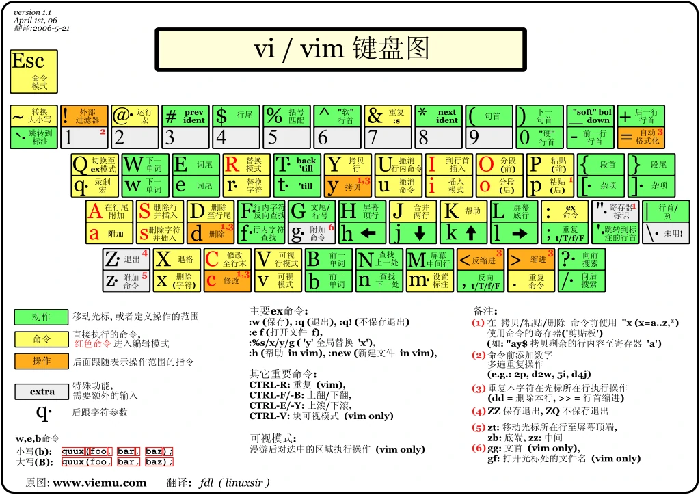
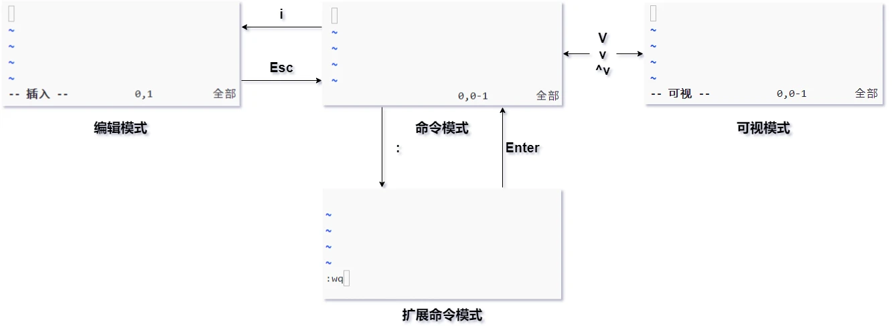
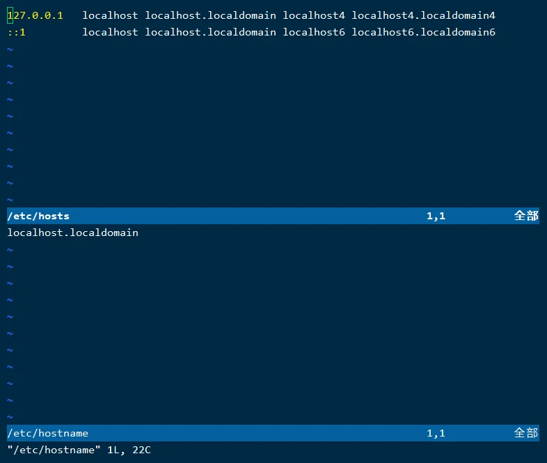
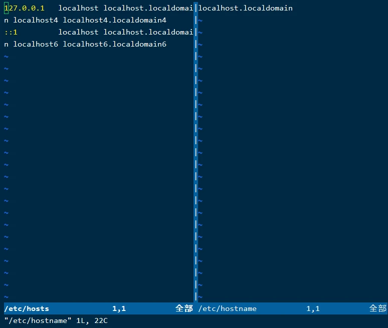

Linux笔记-文件编辑-vim编辑器
Linux常用的文件编辑器有vi、vim、nano、gedit等，其中gedit是可视化的编辑器，如果在命令行模式中，用的最广泛的是vi和vim，其中vim是vi的增强版。
vim安装
- CentOS
- Ubuntu
1
sudo apt install vim
- Debian
1
apt-get install vim
vim编辑器的使用
- 命令
1
vim [文件]
如果要编辑的文件不存在，vim会直接创建该文件，并进入编辑器。
vim编辑器的快捷键

vim编辑器的几种模式

每种模式都可以按Esc返回到命令模式，但扩展命令模式执行完一条命令、可视模式执行一次操作就自动返回命令模式了。
命令模式
当进入vim编辑器后默认进入命令模式，命令模式下可以切换为编辑模式、可视模式、扩展命令模式（这个模式也有低行命令模式的叫法）。感觉这个模式用来浏览文件很方便。
- 命令模式下光标定位快捷键
- 方向键/
h、j、k、l，在文本中移动光标 0，移动光标到行首$，移动光标到行尾gg，移动光标到首行G，移动光标到尾行数字+G，移动光标到指定行/+内容，查找。使用n移动光标到下一个，N移动光标到上一个；查找也支持使用正则表达式
- 方向键/
- 命令模式下文本编辑快捷键
y，复制yy，复制一行数字+yy，复制多行ygg，从光标复制到本文开头yG，从光标复制到文本末尾x，用来删除光标处的字符d，删除dd，删除一行D，删除一行，跟dd不同的是，D删除完会留下空行数字+dd，删除多行dgg，删除光标到文本开头dG，删除光标到文本末尾p，粘贴x，删除光标处的字符u，撤销Ctrl+r，重做r，修改一个字符Insert，切换光标为输入/替换模式，光标将变成竖线/下划线ESC，退出输入模式，切换到命令模式
- 命令模式下进入其他模式快捷键
i，进入编辑模式，光标位置不变I，进入编辑模式，光标移动到行首a，进入编辑模式，光标后移一格A，进入编辑模式，光标移动到行尾o，进入编辑模式，光标另起一行O，进入编辑模式，光标在上面另起一行:，切换到底线命令模式，以在最底一行输入命令v，进入可视模式Ctrl+v，进入可视块模式V，进入可视行模式R，进入替换模式
编辑模式
命令模式下按i进入编辑模式，在这个模式下就可以跟Windows记事本一样输入了。
- 编辑模式下常用的快捷键
- 字符按键以及
Shift组合，输入字符 ENTER，回车键，换行BACK SPACE，退格键，删除光标前一个字符DEL，删除键，删除光标后一个字符- 方向键/
h、j、k、l，在文本中移动光标 HOME/END，移动光标到行首/行尾Page Up/Page Down，上/下翻页Ctrl+P，自动补全
- 字符按键以及
可视块模式
可视块模式下的一些特别好用的快捷键。
- 块插入
Ctrl+v进入可视模式- 选择要插入字符的块
I确定选择- 输入插入的字符
Esc退出，稍等一下，就会全部插入
- 块替换
Ctrl+v进入可视模式- 选择要插入字符的块
r确定选择- 输入插入的字符
- 块删除
Ctrl+v进入可视模式- 选择块
d或者x删除
- 块复制
Ctrl+v进入可视模式- 选择块
y删除
扩展命令模式
扩展命令模式最显著的特点就是在最下面有一个:，这个模式应该是vim编辑器最强大的地方了。
- 扩展命令模式的保存和退出
:+数字进入第指定的行:q退出:w保存:x保存并退出:w!强制保存:q!不保存强制退出:wq!强制保存退出
特别注意在远程链接Linux的时候别随便按Ctrl+s，这玩意不是保存，是锁定显示，按了做任何操作都不显示了，知道按Ctrl+q解除锁定。在长时间编辑的时候要按:w随时保存。使用保存并退出的命令的时候不要按成大写的X了，这个是给文件加上密码，下次打开需要输入密码才行，如果不记得密码了，打开就乱码，要是重要文件就炸了。
- 扩展命令模式的查找和替换
:范围 s/查找的文本/替换的文本/选项例如：:1,5 s/root/xu/的意思就是查找1-5行的root，替换为xu同样的，:6,$ s/root/xu/的意思就是查找第6行到末尾的root，替换为xu，$代表末尾:% s/root/xu/的意思是查找全文的root，替换为xu，%代表全文:,8 s/root/xu/的意思是查找当前行到第8行的root，替换为xu，,代表当前行- 执行上面的命令后会发现，每行的第一个
root背成功替换为xu了，但如果一行有多个root的话，剩下的并没有背替换，这时候就需要用到选项了。g代表所选范围的全局。 例如：:% s/root/xu/g就可以把全文中每一行的所有root替换为xu了 - 如果需要替换的内容或者新内容中包含
/的话，命令可能不能正常识别，此时可以把/换成#，就可以了。 例如：:% s/root/xu/g=:% s#root#xu#g - 查找和替换的命令同样可以使用正则表达式
- 扩展命令模式的读写
:w保存到当前文件:w 路径就是另存为:范围 w 路径把指定范围另存为 例如：:4,$ w /etc/hosts就是把第四行到末尾另存为/etc下的hosts文件r 路径把文件读入到当前文件里面- 同样的读入也可以指定读进来放到哪里，
5 r /etc/hosts就是把/etc下的hosts文件读入到当前文件的第5行。
- 设置vim环境，临时
set nu显示行号，set nonu不显示行号set ic不区分大小写，set noic区分大小写set ai自动缩进，set noai不自动缩进set list显示控制字符，set nolist不显示控制字符- 以上所有的设置都是临时的，只在本次生效，当退出vim编辑器后，再打开，就没了
- 设置vim环境，永久
- 通过编辑vim的配置文件可以永久生效。
- 修改
/etc/vimrc影响所有用户 - 修改
~/.vimrc只影响修改的用户 - 把上面临时设置的命令写到文件里面去，下次打开就会读取设置，自动生效。
vim编辑器同时打开多个文件
vim编辑器可以同屏打开多个文件，方便对照和编辑。
命令
1 | vim -o 路径1 路径2 |
上面两个的区别是小写 o 为水平分割，大写 O 为垂直分割，看个人喜好。


本博客所有文章除特别声明外，均采用 CC BY-NC-SA 4.0 许可协议。转载请注明来自 Hexo！
相关推荐